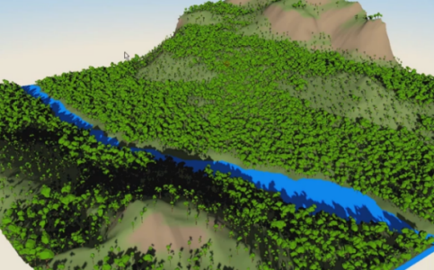
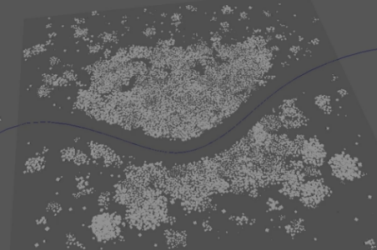

使用以自然的非碰撞簇排列的附加点包围每个点。
世界节点
-
簇模式(Cluster Mode)
-
确定如何围绕每个基础点排列附加点。选项包括：
- 球(Ball)：将点排列为实心球体。
- 圆盘(Disc)：将点排列为 2D 实心圆。
- 圆形(Circle)：将点排列为 2D 空心圆。
- Fibonacci 螺旋(Fibonacci Spiral)：将点排列为 2D 螺旋。
- Fibonacci 球体(Fibonacci Sphere)：将点排列为空心球体。
- 基于贴图(Map Based)：基于输入贴图排列点。点分布朝向贴图的浅色区域偏移。
- 陆地生态系统(Terrestrial Ecosystem)：通过将点视为随时间而老化和传播种子的植物进行模拟来排列点。
-
上一个点模式(Previous Points Mode)
-
确定附加点如何与每个基础点进行交互。选项包括：
- 保持(Keep)：显示基础点，但在计算交点时忽略它们（使簇与基础对象相交）。
- 保持并回避(Keep and Avoid)：隐藏基础点，但仍将其包含在交点计算中（使簇避免与基础对象相交）。
- 禁用并回避(Kill and Avoid)：在将基础点包含在交点计算中后将其移除（使簇回避基础对象原来的位置）。
- 禁用(Kill)：移除基础点，防止其干扰交点计算。（使簇与基础对象原来的位置重叠）。
簇
-
每个簇的点数(Points Per Cluster)
-
设置要围绕每个基础点排列的附加点数。
-
每个簇的随机点数(Random Points Per Cluster)
-
为每个簇添加随机数量的附加点，最多不超过指定数量。
-
缩放模式(Scale Mode)
-
缩放簇中的对象。选项包括：
- 法线(Normal)：比例由“半径”(Radius)和“半径变化”(Radius Variance)控制。
- 比例贴图(Scale Map)：使用贴图指定“簇模式”(Cluster Mode)设置为“基于贴图”(Map Based)时的点大小。
- 展开至最近(Expand to Nearest)：点将放大到与其他网格相交为止。
- 继承(Inherit)：比例继承自簇所属的 MASH 点。
-
半径(Radius)
-
调整对象的基础大小。
-
半径变化(Radius Variance)
-
为每个对象添加额外的随机变化。
-
最小间隔(Minimum Separation)
-
在簇中隔开点。
-
碰撞迭代(Collision Iterations)
-
确定对象碰撞的质量。值越大，碰撞越精确。
-
簇半径(Cluster Radius)
-
确定“簇模式”(Cluster Mode)设置为“圆形”(Circle)、“Fibonacci 螺旋”(Fibonacci Spiral)或“Fibonacci 球体”(Fibonacci Sphere)时基础点周围点的半径。
-
ID 模式(ID mode)
-
确定如何将 ID 指定给簇。选项包括：
- 固定(Fixed)：为每个簇点指定由“固定 ID”(Fixed Id)指定的相同 ID。
- 阶跃(Stepped)：为每个簇指定逐渐递增的 ID。
- 随机(Random)：为每个点指定随机 ID。
- 簇随机(Cluster Random)：为每个簇指定随机 ID（同一簇中的所有点均指定相同的 ID）。
- 最小 ID(Minimum Id)、最大 ID(Maximum Id)
-
确定模拟中允许的对象 ID 范围（“最小 ID”(Minimum Id)到“最大 ID”(Maximum Id)）。
-
固定 ID(Fixed Id)
-
确定“ID 模式”(ID mode)设置为“固定”(Fixed)时使用的 ID 编号。
贴图设置(Map Settings)
指定“基于贴图”(Map Based)
“簇模式”(Cluster Mode)的参数。
-
比例贴图(Scale Map)
-
指定将“缩放模式”(Scale Mode)设置为“比例贴图”(Scale map)时使用的贴图。浅色区域会放大。
-
放置贴图(Placement Map)
-
指定用于“基于贴图”(Map Based)簇的贴图。浅色区域中更有可能繁殖点。
-
贴图投影轴(Map Projection Axis)
-
确定投影“放置贴图”(Placement Map)时所沿的轴。
-
输入网格(Input Mesh)
-
指定“输入网格”(Input Mesh)会使簇点粘附到该网格。可以使用鼠标中键将网格拖入此字段，或者单击鼠标右键连接选定网格。如果网格已连接，还可以单击鼠标右键将其移除或显示在“大纲视图”(Outliner)中。
陆地生态系统(Terrestrial Ecosystem)
指定基于“陆地生态系统”(Terrestrial Ecosystem)的“簇模式”(Cluster Mode)的参数。模拟时，起点视为种子。种子逐渐长大成植物，然后播下新种子，依此类推。
-
生态系统年龄(Ecosystem Age)
-
确定要模拟老化/落种过程的年数。
-
最大元素数(Maximum Elements)
-
确定生态系统中一次允许的最大种子数。
-
种子倍增(Seed Multiplier)
-
每个对象可以播下的种子数的倍增。
-
基因型编辑器(Genotype Editor)
-
打开基因型编辑器(Genotype Editor)，用于在“属性编辑器”(Attribute Editor)中修改每个种子类型的属性。
地面网格(Ground Mesh)
指定发生模拟的地面网格的参数。
-
输入网格(Input Mesh)
-
指定“输入网格”(Input Mesh)会使簇点粘附到该网格。可以使用鼠标中键将网格拖入此字段，或者单击鼠标右键连接选定网格。如果网格已连接，还可以单击鼠标右键将其移除或显示在“大纲视图”(Outliner)中。
-
忽略坡度(Ignore Slope)
-
启用此选项可使用非平面（例如，圆环）作为“输入网格”(Input Mesh)。
-
计算着色(Calculate Shade)
-
确定是否应在模拟中考虑灯光/着色效果。
-
着色变化(Shade Variance)
-
增加该值可使着色计算更自然。
-
极偏移(Pole Bias)
-
确定行星极对模拟的影响。值 0 适用于赤道，而值 1 适用于极。
-
极方向(Pole Direction)
-
确定朝向行星极的方向。
Maps
-
使用基因型贴图(Use Genotype Map)
-
允许您使用 2D 贴图将起始种子位置指定为横向。特定 ID 颜色的基因型（在“基因型编辑器”(Genotype Creator)中指定）将在贴图上相同颜色的区域中开始。
-
基因型贴图(Genotype Map)
-
指定用于指定 ID 的贴图。
-
R: 温度(R: Temperature)、G: 土壤质量(G: Soil Quality)、B: 湿度(B: Moisture)
-
确定是否将各自的因子包含在模拟中（在 ID 贴图中由红、绿和蓝三色表示）。
-
条件贴图(Conditions Map)
-
指定用于指定“温度”(Temperature)、“土壤”(Soil)和“湿度”(Moisture)的贴图。
-
将年龄输出为时间(Output Age as Time)
-
将植物年龄输出到时间通道，从而允许您根据植物年龄指定动画帧。对延时动画很有用。
-
时间范围(Time Range)
-
确定启用了“将年龄输出为时间”(Output Age as Time)时使用的时间范围。
-
圆化时间(Round Time)
-
将“将年龄输出为时间”(Output Age as Time)的输出值舍入为最接近的整数。
-
稀疏度(Sparsity)
-
确定每个点周围的空间量。
-
随机旋转(Random Rotations)
-
随机旋转每个点，最多不超过在每个轴中指定的值。
回避(Avoidance)

允许指定簇点要回避的对象。兼容对象包括多边形网格、NURBS 和 Bezier 曲线以及其他 MASH 网络。
注： 如果在回避时发现点朝不需要的方向移动，请使用“输入网格”(Input Mesh)将其移动限制到曲面。
-
回避半径(Avoidance Radius)
-
指定点要在回避对象周围回避的区域。
注： 如果仍在“回避半径”(Avoidance Radius)内繁殖点，则需加宽“回避渐变”(Avoidance Ramp)的左侧。
-
回避渐变(Avoidance Ramp)
-
确定“回避半径”(Avoidance Radius)的衰减强度和形状。曲线图表示点从“回避半径”(Avoidance Radius)的边缘（左侧）繁殖到回避对象本身（右侧）的可能性。
-
要回避的对象(Objects to avoid)
-
列出簇点当前要回避的对象。您可以使用鼠标中键将对象拖动到此字段中来进行添加，或者单击鼠标右键来连接选定对象。还可以在现有对象上单击鼠标右键，在“大纲视图”(Outliner)中移除或显示对象。
强度
-
强度(Strength)
- 同时减弱对所有点的节点效果。
-
随机强度(Random Strength)
- 按随机顺序平滑地减弱所有点的节点效果。
-
阶跃强度(Step Strength)
- 每次禁用一个点的节点效果。
-
强度贴图(Strength Map)
- 确定输入文件（2D 纹理、动画纹理等）来控制该节点的效果的形状。
-
贴图投影轴(Map Projection Axis)
- 确定投影“强度贴图”(Strength Map)时所沿的轴。
-
贴图辅助对象(Map Helper)
- 显示用于在场景中交互放置“强度贴图”(Strength Map)的对象。可以在该字段上单击鼠标右键来创建新的辅助对象（平面）（如果不存在）。还可以使用鼠标中键将网格拖入此字段，或者单击鼠标右键连接选定网格。如果网格已连接，还可以单击鼠标右键来断开其连接或者将其显示在大纲视图中。
注： 为获得最佳结果，请将相同的纹理指定给“强度贴图”(Strength Map)和“贴图辅助对象”(Map Helper)（在创建新的辅助对象时将自动执行此操作）。